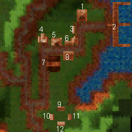

| 1 | Tavern: The King's Crown (fill to
20) Dagger Expert in the back. |
| 2 | Docks: Zephyr [Travel Schedule] |
| 3 | Expert Bowmanship (Helen Teal) Mind Guild Membership (Tracy Fauta the Apprentice) |
| 4 | [Retrieve Harp Quest] --- Berserkers' Fury Membership |
| 5 | Berserkers' Fury, Skills: Bow, Shield, Chain, Plate and Repair |
| 6 | Weapon: The Eagle's Eye |
| 7 | Stables: Royal Lines [Travel Schedule] |
| 8 | Armor: Metalweave Armory |
| 9 | Expert Shield Defense |
| 10 | Expert Leather Armor Training |
| 11 | Expert Plate Armor Training |
| 12 | Expert Chain Armor Training |
Leave us a message at mgrounds@hotmail.com